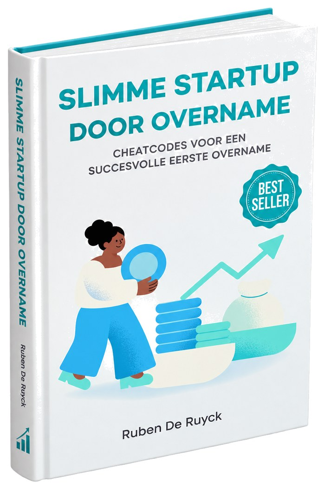
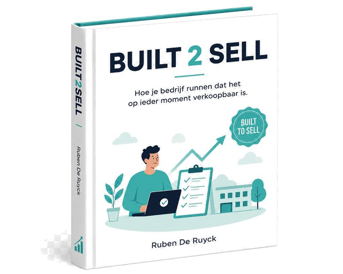

Artikels, checklists, tools en gidsen. Geschreven vanuit de praktijk — voor eigenaars die eerst willen begrijpen voor ze beslissen.
Praktijkinzichten voor eigenaars die overwegen te verkopen, kopers die een overname voorbereiden, en ondernemers die hun bedrijf structureel verkoopbaar willen maken. Nieuwe thema’s en artikels worden regelmatig toegevoegd.
Een economisch aantrekkelijke onderneming kan juridisch onverkoopbaar zijn. Vijf aandachtspunten die bepalen of uw bedrijf klaar is voor overdracht.
Lees het artikel — M&A · 8 minWat in theorie een rechttoe rechtaan transactie lijkt, is in de praktijk vaak complex. Vijf valkuilen die u vóór de due diligence moet oplossen.
Lees het artikel — M&A · 7 minBedrijven die pas op het laatste moment worden voorbereid, brengen systematisch een lagere prijs op. Het verschil kan honderdduizenden euro’s bedragen.
Lees het artikel — M&A · 8 minMeer dan de helft van alle overnames creëert niet de beoogde waarde. Zes dingen die kopers structureel onderschatten — en hoe u ze vermijdt.
Lees het artikel — M&A · 12 minWaarom psychologie de sleutel is tot succesvolle M&A. Tien cognitieve valkuilen bij overname-beslissingen — en hoe u ze herkent en vermijdt.
Lees het artikel — M&A · 7 minEen bedrijf dat klaar is om verkocht te worden, is een bedrijf dat goed loopt. Vijf stappen om uw onderneming klaar te maken voor overdracht.
Lees het artikel — Continuïteit · 7 minDe vennootschapsstructuur beschermt niet altijd. In welke situaties wordt de sluier tussen vennootschap en zaakvoerder doorgeprikt?
Lees het artikel — Continuïteit · 8 minVroegtijdige herkenning maakt het verschil tussen herstel en faillissement. Vijf structurele alarmsignalen — en wat u doet zodra u ze herkent.
Lees het artikel — Continuïteit · 8 minContinuïteit is geen vage wens maar een juridische norm. Wat betekent het boekhoudkundig, contractueel en voor de zaakvoerder?
Lees het artikel — Continuïteit · 8 minBestuurdersaansprakelijkheid is een sluipend risico dat exponentieel escaleert. Wanneer kantelt een normaal risico in existentieel gevaar?
Lees het artikel — Continuïteit · 8 minDe prijs van uitstel is exponentieel. Waarom zaakvoerders systematisch te laat reageren — en welke opties er verdwijnen naarmate de tijd vordert.
Lees het artikelMeer thema’s (Waardering, Kopen, Aandeelhouders, Post-deal) volgen binnenkort.

"Slimme startup door overname" — geschreven door Ruben De Ruyck — is een praktische gids voor ondernemers die niet vanuit het niets willen starten, maar via overname van een bestaand bedrijf. Voor searchers, MBI-kandidaten en wie acquisition entrepreneurship serieus overweegt.
Het boek behandelt de zoektocht, de waardebepaling, de financieringsopties, de juridische valkuilen en de eerste 100 dagen na overname.
Download inleiding
"Built2Sell" — het boek waar Ruben De Ruyck momenteel aan werkt — vertrekt van een eenvoudig idee: een bedrijf dat klaar is om verkocht te worden, is een bedrijf dat goed loopt. Documenteerbare processen, betrouwbare cijfers, juridische orde, sleutelpersoneel dat niet de eigenaar is.
Dat is geen exit-strategie. Dat is goed ondernemerschap. En het is precies waar de Exit Readiness Scan van MASTER M&A aan werkt.
Schrijf in voor updates